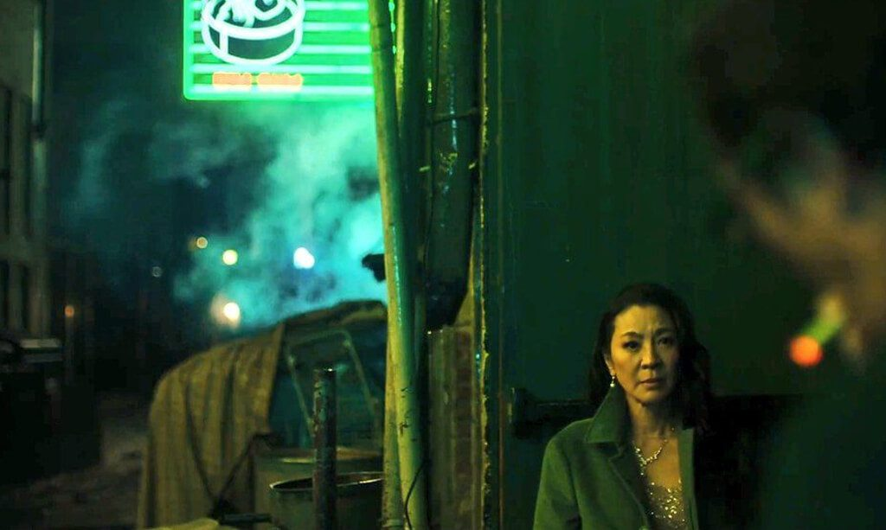
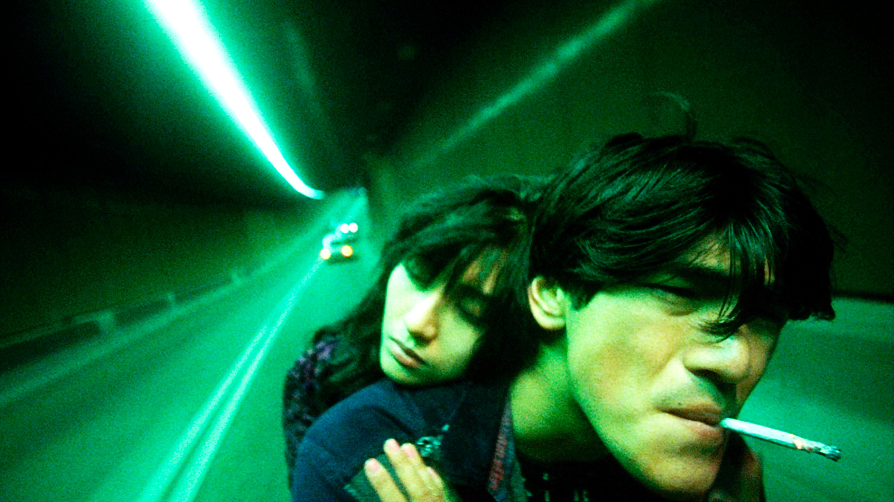
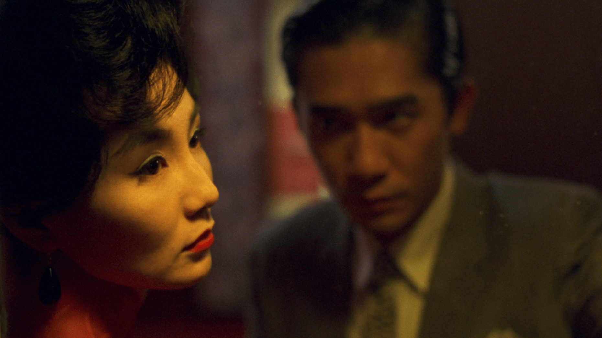

Video Essay
Delving into the intricacies of Wong Kar-Wai's filmography, the project aims to uncover the subtle connections and themes that thread through his iconic works—from the romantic allure of "In the Mood for Love" to the enigmatic charm of "Fallen Angels" and the stylistic brilliance of "Chungking Express."
Initially inspired to explore the similarities among Wong Kar-Wai's films, a unique twist emerged during research. Discovering a video essay centered around the movie "Everything Everywhere All at Once," a film that resonates personally, sparked the idea to integrate it as a backdrop for this exploration. Leveraging this existing video as a canvas, the essay seamlessly weaves in additional footage from Wong Kar-Wai's oeuvre, creating a dynamic interplay between the chosen scenes.
As the narrative unfolds, viewers witness the resonance and intertextuality that emerge when these cinematic pieces converge. The essay becomes a testament to the interconnectedness of Wong Kar-Wai's visual language, where characters, emotions, and atmospheres transcend individual films to form a cohesive narrative mosaic.
n the spirit of cinematic exploration, join the conversation as we traverse the cinematic landscapes of Wong Kar-Wai, unraveling the tapestry of emotions, aesthetics, and storytelling that define this unparalleled cinematic auteur.
Click here to see more details: Here